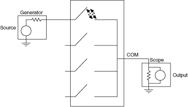
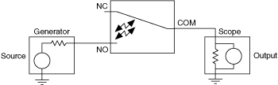
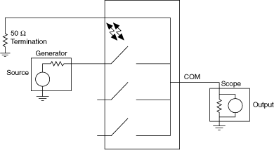

隔离是防止未使用通道上的信号出现在活动的终止通道上的能力。根据以下公式之一，隔离以抑制 dB 为单位指定：
隔离度 (dB) = 10 log (P source / P out )
隔离度 (dB) = 20 log (V source / V out )
下图说明了隔离。



提交有关此主题的反馈。 访问ni.com/support以获得技术支持。
 提交有关此主题的反馈。
提交有关此主题的反馈。 访问ni.com/support以获得技术支持。 提交有关此主题的反馈。 访问ni.com/support以获得技术支持。
访问ni.com/support以获得技术支持。 提交有关此主题的反馈。 访问ni.com/support以获得技术支持。